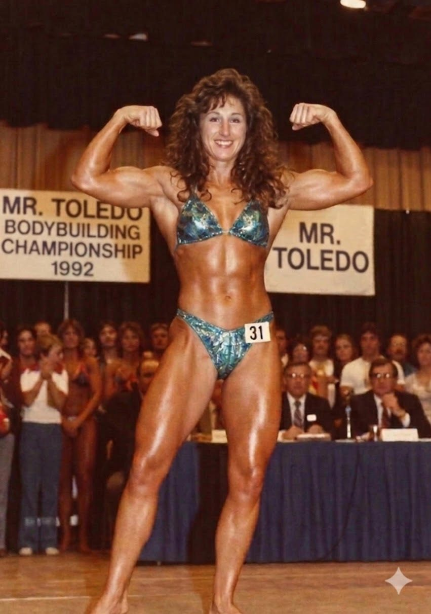
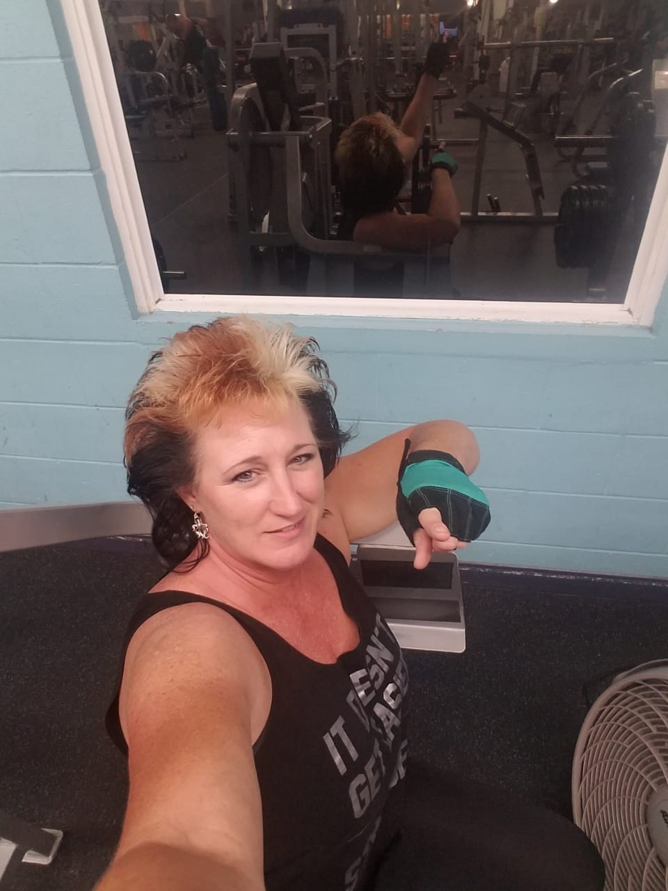
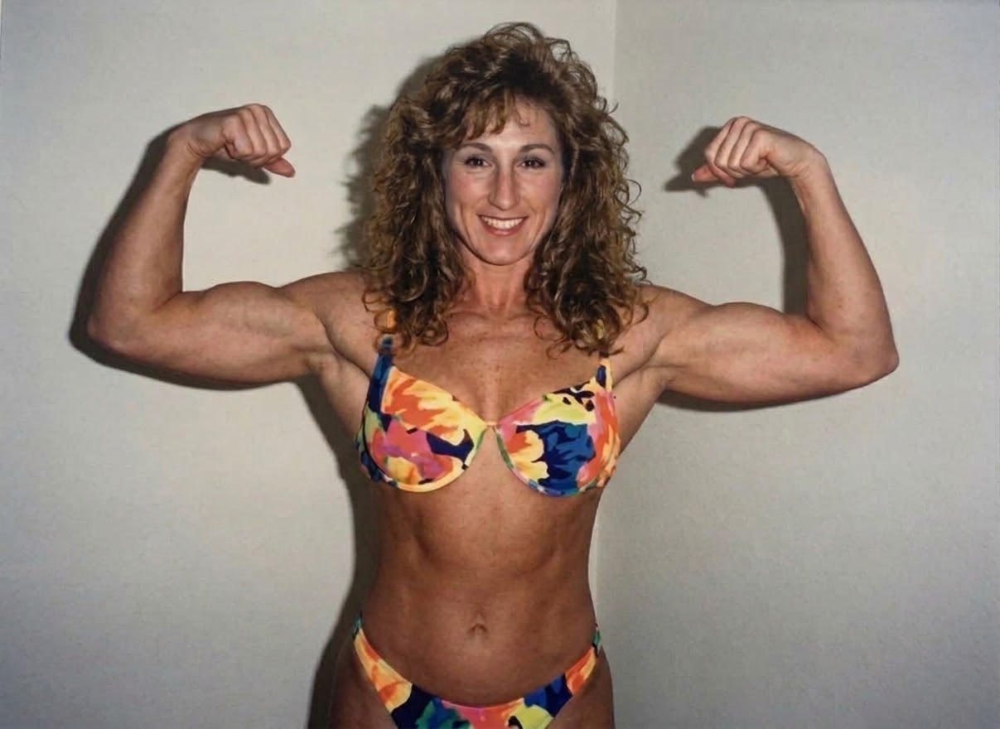
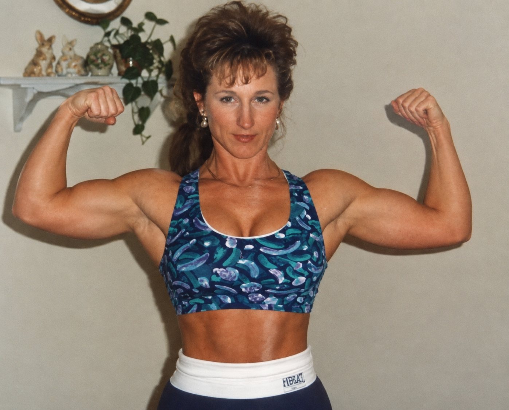
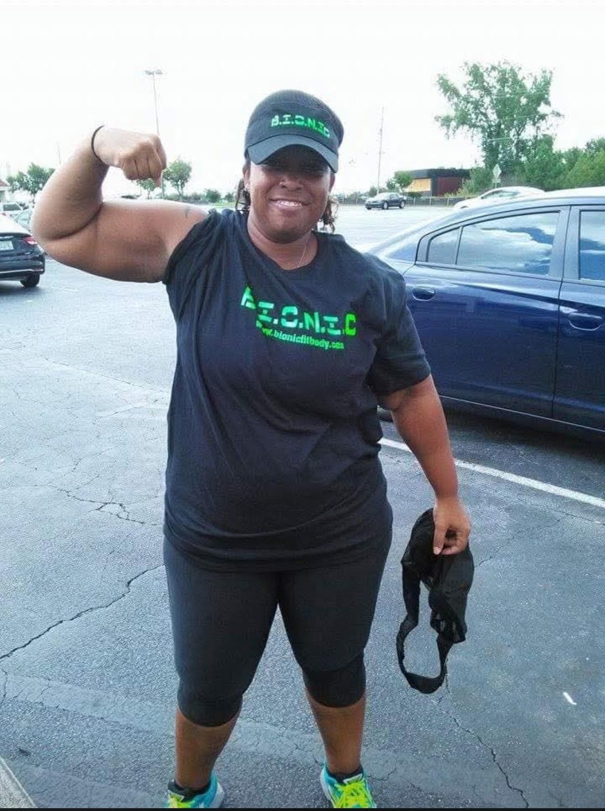
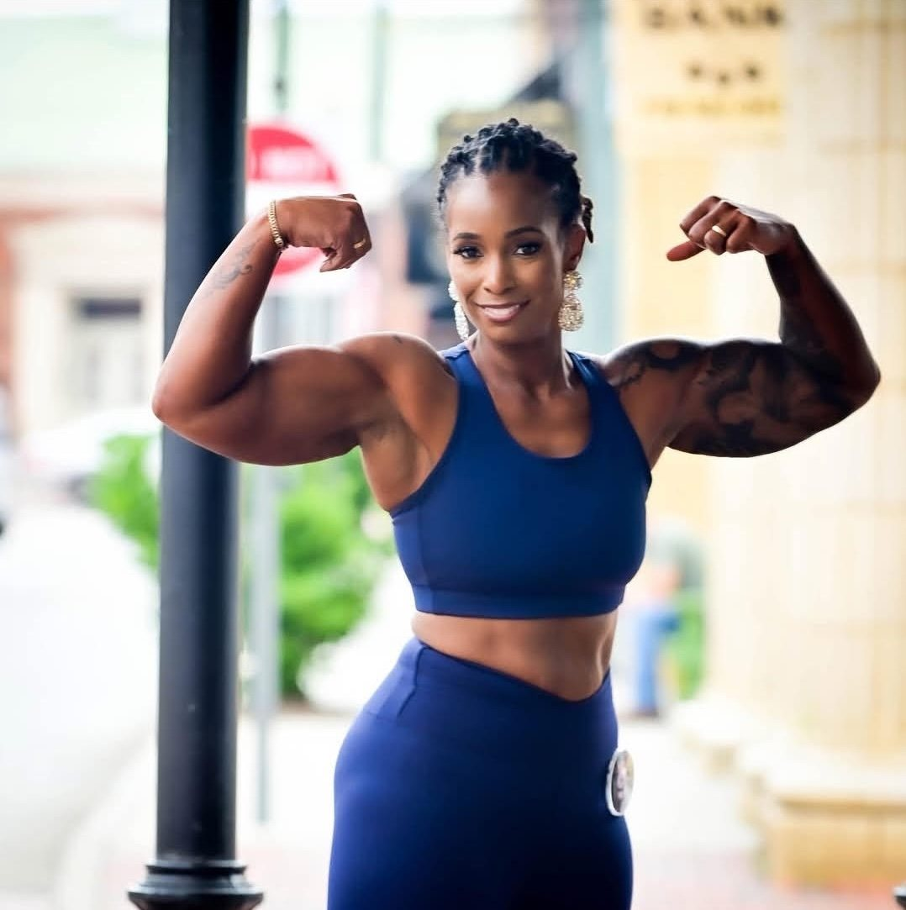
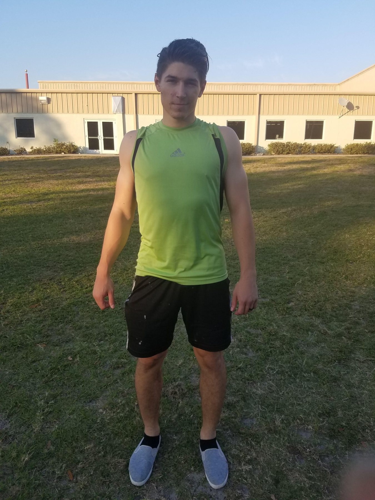
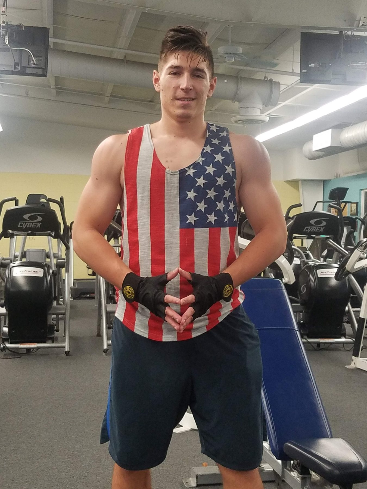

Muscle Isolation
Learn how to properly engage individual muscle groups, improve mind-muscle connection, and correct movement patterns.


Body Sculpt by Sherry · Elite Personal Training
From the bodybuilding stage to personalized coaching, Sherry brings a lifetime of attention to movement, muscle development, and meaningful progress.
About Sherry
Sherry is a certified personal trainer and elite fitness professional dedicated to helping clients build strong, confident, and well-developed bodies through precision-based training and evidence-driven nutrition.
Her background in competitive fitness shaped her understanding of structured programming, progressive overload, recovery, and detail-oriented training. Today, she applies that knowledge to clients at every level.
The Journey
Long before she became a coach, Sherry developed her understanding of strength and physique training through her own bodybuilding experience. That foundation continues to inform her thoughtful, individualized approach today.


Learn how to properly engage individual muscle groups, improve mind-muscle connection, and correct movement patterns.
Programs built for body recomposition, glute growth, lagging muscle groups, and balanced physique refinement.
Sports nutrition support designed to fuel performance, recovery, consistency, and long-term sustainability.
Coaching Services
In-person coaching focused on form, progression, and accountability.
Structured programming and support for clients training remotely.
Targeted activation, hypertrophy strategy, and lower-body programming.
Build muscle, reduce fat, and improve overall shape with sustainable systems.
Physique-focused programming based on progressive overload and detail.
Nutrition guidance to support performance, recovery, and consistency.
Real People · Real Progress
Every journey is individual. Explore two client progress stories and hear what training with Sherry feels like.


Client Story
“Within just a few weeks of training with her, I could already see noticeable changes in my body.”
Sherry is truly an AMAZING trainer. I’ve been training for years, so I know what a great trainer looks like, and she is easily one of the best I’ve ever worked with. Within just a few weeks of training with her, I could already see noticeable changes in my body — and that says a lot considering I’m not new to fitness.
One of the things I appreciate most about Sherry is her use of isolation techniques. She has a way of helping me really connect with and target the specific muscle we’re working instead of just going through the motions. I’ve noticed a huge difference in how I feel exercises, my muscle activation, and the overall changes in my physique. Her approach is incredibly intentional, and you can tell she truly understands body mechanics and how to get the most out of every movement.
What really sets Sherry apart is her knowledge and attention to detail. She is an expert at what she does. I always feel safe during our workouts because she is so careful with form, technique, and progression. She knows exactly when to push me and when to make an adjustment, and because of that, I’ve been able to train hard while staying injury-free.
She actually listens to you, pays attention to your goals, and makes every workout feel purposeful. She is always prompt, professional, encouraging, and completely present during our sessions.
And somehow, when I am absolutely convinced I have NOTHING left in the tank, Sherry will find one or two more reps in me every single time! She knows how to push you beyond what you think you can do without ever making you feel unsafe or defeated.
If you want a trainer who is knowledgeable, motivating, attentive, and genuinely invested in your progress, Sherry is THAT trainer. Her ability to isolate and activate muscles, fine-tune technique, and challenge you safely is on another level. I cannot recommend her enough. She is absolutely incredible at what she does!


Progress Gallery
Every client's starting point and goals are different.
Individual experiences and results vary.
Credentials
Mission
“To provide elite, precision-based fitness coaching that emphasizes intelligent training, targeted muscle isolation, and evidence-based nutrition.”
Sherry is committed to helping clients build strength, balance, and sustainable results through education, consistency, and personalized programming.
Start Coaching